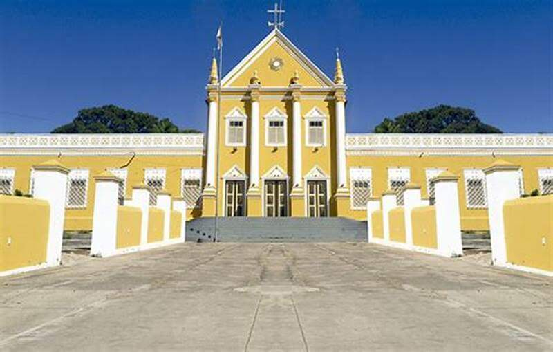

INÍCIO
CRATO
JUAZEIRO DO NORTE
BARBALHA
Locais Religiosos
Locais Turísticos
Restaurantes e Bares
Hotéis e Pousadas
Categorias
Locais Religiosos
Locais Turísticos
Restaurantes e Bares
Hotéis e Pousadas
Diocese de Crato
Mais Informações
Mais Informações
Paróquia Nossa Senhora dos Milagres
Mais Informações

Seminário Diocesano
Mais Informações
Mais Informações